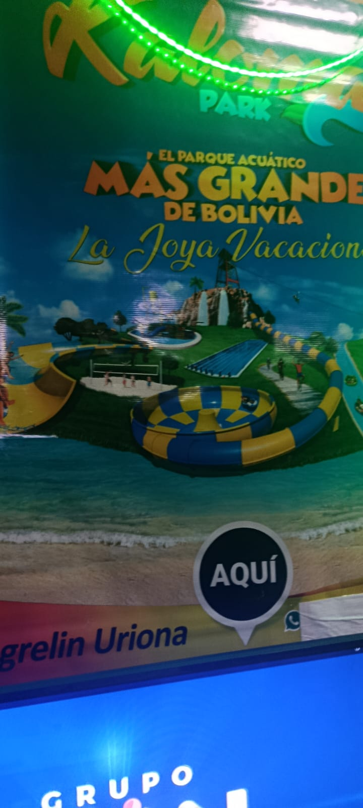
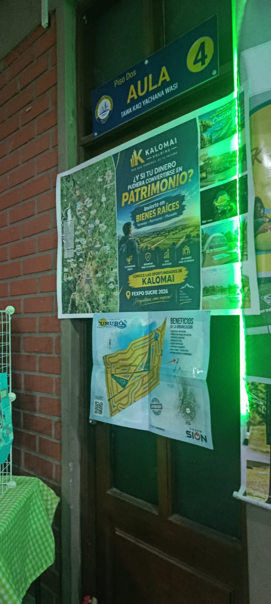
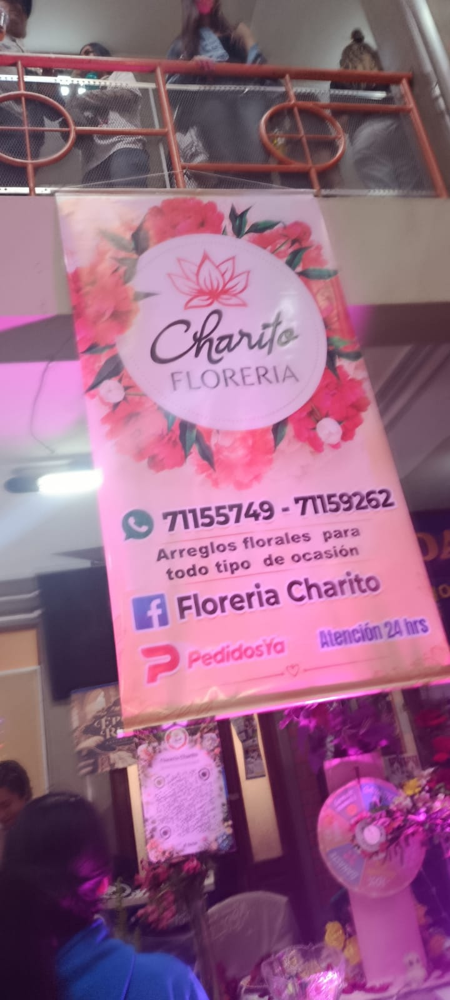
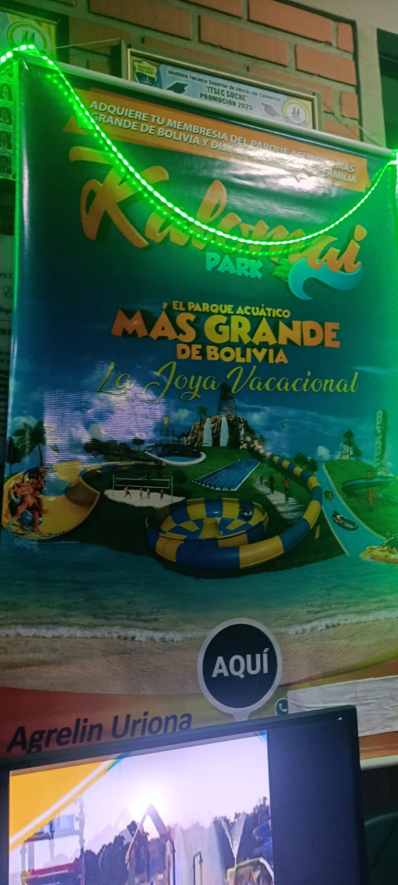
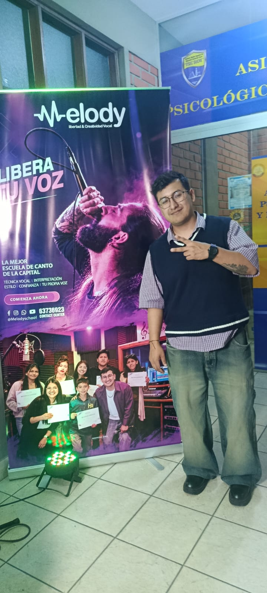
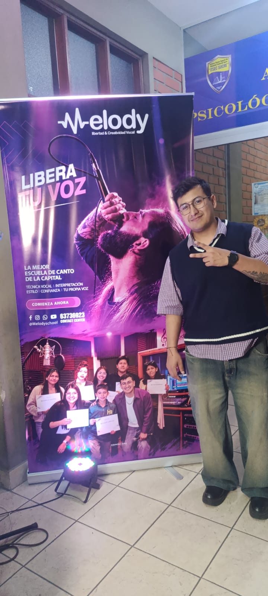

1. ¿Qué temática representa este rubro?
Respuesta: Propuestas vinculadas con tecnología, equipos, comunicación y servicios digitales.
Espacios y propuestas relacionadas con tecnología, comunicación, equipos y servicios digitales observados en el recorrido.
Ver preguntas y respuestas ↓Espacios y propuestas relacionadas con tecnología, comunicación, equipos y servicios digitales observados en el recorrido. Las fotografías muestran ejemplos del material recopilado durante el recorrido de la feria.










Estas preguntas resumen información relacionada con el rubro. Cuando no se contaba con respuestas registradas de una entrevista, se redactaron respuestas orientativas para completar el material.
Respuesta: Propuestas vinculadas con tecnología, equipos, comunicación y servicios digitales.
Respuesta: Porque ayuda al cliente a comprender qué incluye el servicio y cómo puede utilizarlo.
Respuesta: Protegerlos de golpes y líquidos, mantenerlos limpios y seguir las indicaciones de uso.
Este es el texto utilizado como referencia para diseñar el logotipo de este emprendimiento.
Diseña un logotipo tecnológico, moderno y profesional para un emprendimiento de tecnología y servicios digitales. Incorpora símbolos relacionados con computadoras, circuitos, programación e innovación digital. Utiliza tonos azules, violetas y cian para transmitir confianza, modernidad y creatividad. El diseño debe ser limpio, reconocible y adecuado para una página web tecnológica. Utiliza un fondo transparente.